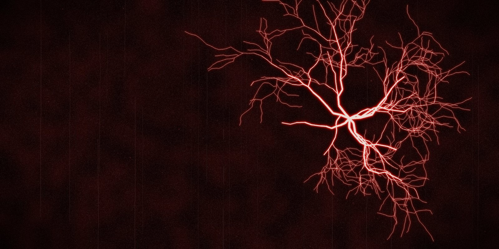

KRIECHSTROM
Прошивка для M-VAVE FM-1 под мрачный индастриал и EBM: четыре дорожки, пошаговый секвенсор, перегруженные синтезаторы, драмы и живые эффекты.
Поставить на FM-1 Читать мануал Шпаргалка Скачать @FWSC@


Что внутри
- GLCH, движок из Glitchbox: клиппинг, фолдер, резонансный фильтр, понижение разрядности и микрозаикание; 48 звуков, у большинства уже стоит педаль перегруза.
- @NSOUNDS@ звуков в 13 движках, готовых к игре: перегруженные басы, холодные лиды, расстроенные клавиши, пэды, шумы и текстуры, плюс 13 драм-китов. Список можно фильтровать по категориям.
- DICE: держи SEQ, жми F5, и у дорожки новая партия в одном из восьми настроений, от MACHINE до HUSH.
- HAPPY ACCIDENT: держи EDIT, жми G5, и два-три параметра звука случайно меняются. Удержание SAVE отменяет.
- Секвенсор на 64 шага на каждой дорожке: локи, условия, рэтчеты, автоматизация, песни.
- Драмы: 13 китов, включая DESTROY, восемь линий, сетка на клавишах.
- Живые эффекты на клавишах: повторы, остановка ленты, фриз, свипы фильтра, ROLL, GATE, броски в ревер и дилей.
- MIDI вход по USB и TRS, MIDI learn, USB-аудио. На компьютере видна как KRIECHSTROM.
- Чёрное с красным, крупные читаемые цифры, подсказки на экране.
Kriechstrom по-немецки ток утечки по поверхности изоляции. На старой изоляции он оставляет ветвистый след вроде этого, фигуру Лихтенберга.
Зачем
Glitchbox сделан на Felucca 1.5.1 под старый чип памяти FM-1 и на новых экземплярах не запускается. KRIECHSTROM собран на текущей Felucca, которая поддерживает оба чипа, и переносит из Glitchbox движок GLCH и эффекты.
На чём сделано
KRIECHSTROM сделан на основе Felucca 1.8.2 (Leo Kuroshita, Hügelton Instruments), с частями Glitchbox (erikdevos) и идеями из DIRGE (sinscum). Спасибо всем троим за вдохновение. Свободная программа под GNU GPL 3.0: исходники этой сборки (@SRCSIZE@).